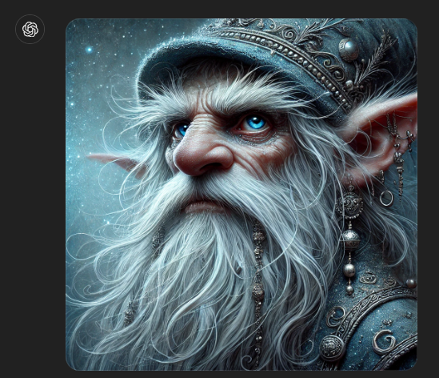

Textbaserade tjänster med bildgenerering
Här följer ett par exempel på textbaserade tjänster som har integrerad bildgenerering. Dessa alternativ är helt gratis men har begränsad kvalitet och prestanda. Om tjänsterna är tungt belastade är det inte helt säkert att det går att generera i vissa faller. Det kan även ske om du redan har genererat många bilder under ett tillfälle. Då kan det dessutom dröja en viss tid innan verktyget blir tillgängligt igen.
ChatGPT
ChatGPT är ett av dessa tjänster som numera erbjuder bildgenerering med AI! ChatGPT använder i dagsläget DALL-E som AI-modell för att generera bilder. Med hjälp av bildgenerering med ChatGPT kan du skapa realistiska karaktärer, föremål eller konst. Bilderna kommer med relativt hög upplösning, imponerande detalj och textur. Detta gäller främst för bilder där endast ett fåtal objekt är i fokus. Ju mer utzoomad bilden är och ju mer som finns med i bilden, desto sämre kvalitet får detaljerna.
Värt att nämna är att ChatGPT även kan skapa bilder i olika orienteringar, till exempel kvadratisk, vertikal eller landskap. Om du genererar för många bilder kanske det inte längre går att skapa bilder i samma konversation. Detta löser sig oftast genom att vänta en stund eller genom att skapa en ny chatt. Här kommer ett exempel på vad ChatGPT kan skapa:
Microsoft Copilot
Microsoft Copilot är ett annat exempel på en textbaserad tjänst som också kan skapa bilder. Denna tjänst är inkluderad i "Microsoft 365" vilket faktiskt kostar pengar. Denna tjänst borde du dock har tillgång till genom jobb eller genom ett skolkonto om du vanligtvis använder program som Word, Powerpoint eller Excel.